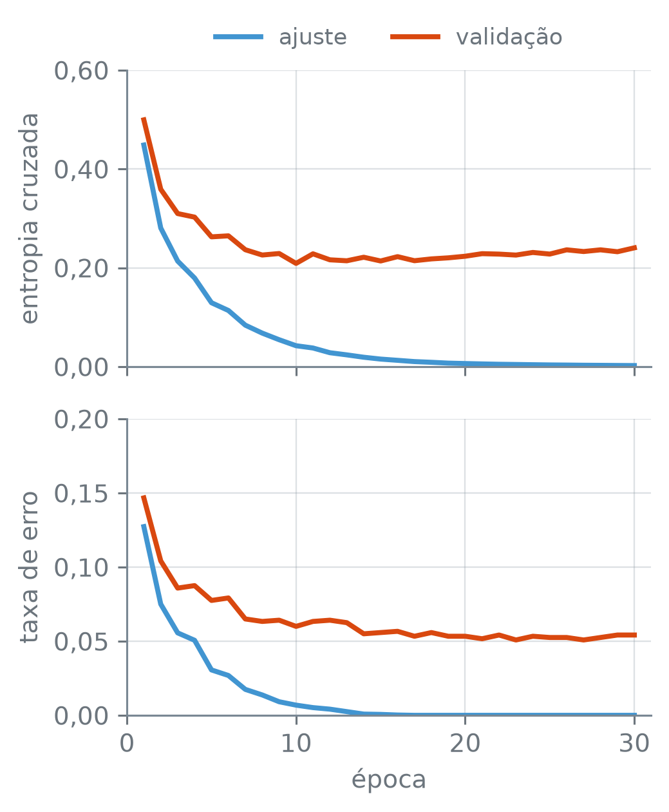
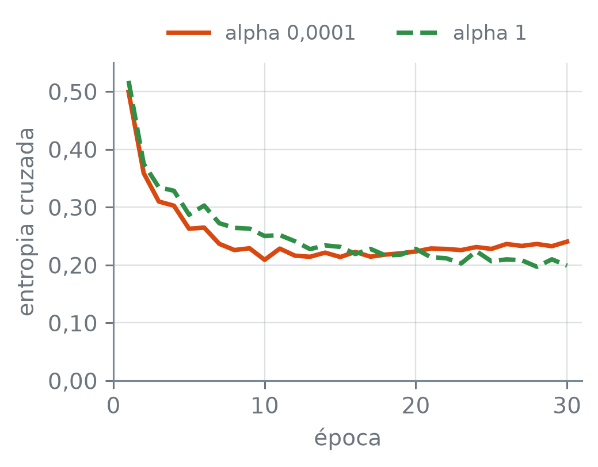

def numero_br(valor, casas=2):
texto = f"{valor:,.{casas}f}"
texto = texto.replace(",", "_").replace(".", ",").replace("_", ".")
return texto.replace("-", "−")Ajustando uma Rede: Retropropagação, Gradiente Estocástico e Regularização
Nota
Esta seção corresponde à seção 10.7 de James et al. (2023).
Uma rede de cinco unidades ReLU liga os anos de carreira ao log do salário dos jogadores de beisebol, e o ajuste dela começa por pesos sorteados. Se o sorteio muda, sai a mesma curva? Se o ajuste pode terminar em lugares diferentes conforme o ponto de partida, como ele anda de um ponto a outro, e quando deve parar?
A função numero_br escreve os números com a pontuação brasileira:
Um problema com vários mínimos
O código abaixo lê os jogadores com salário e ajusta a mesma rede, cinco unidades ReLU sobre os anos padronizados, com o mesmo método de busca dos pesos, solver="lbfgs", dez vezes. Só muda a semente (random_state de 0 a 9), e com ela os pesos sorteados no começo. Para cada ajuste, imprime o MSE de treino; no fim, mostra o maior número de iterações dos dez ajustes contra o limite de 5.000, para conferir que o lbfgs parou porque o MSE deixou de cair, e não porque as iterações acabaram:
import numpy as np
import pandas as pd
from sklearn.metrics import mean_squared_error
from sklearn.neural_network import MLPRegressor
from sklearn.pipeline import make_pipeline
from sklearn.preprocessing import StandardScaler
hitters = pd.read_csv("dados/Hitters.csv").dropna()
print("jogadores:", len(hitters))
y = np.log(hitters["salario"])
X = hitters[["anos"]]
grade = pd.DataFrame({"anos": np.linspace(1, 24, 300)})
mse, curvas, redes, iteracoes = {}, {}, {}, {}
for semente in range(10):
rede = make_pipeline(
StandardScaler(),
MLPRegressor(hidden_layer_sizes=(5,), solver="lbfgs",
max_iter=5000, random_state=semente))
rede.fit(X, y)
mse[semente] = mean_squared_error(y, rede.predict(X))
curvas[semente] = rede.predict(grade)
redes[semente] = rede
iteracoes[semente] = rede[-1].n_iter_
mse = pd.Series(mse).round(4)
def quatro_casas(valor):
return numero_br(valor, 4)
tabela_sementes = pd.DataFrame({"MSE de treino": mse.map(quatro_casas)})
tabela_sementes.index.name = "semente"
print(tabela_sementes.to_string())
print("maior número de iterações:", max(iteracoes.values()),
"(limite 5.000)")
print("valores distintos de MSE:", mse.nunique())
print("de", numero_br(mse.min(), 4), "a", numero_br(mse.max(), 4))
comum = mse.value_counts()
print("o mais repetido:", numero_br(comum.index[0], 4),
f"({comum.iloc[0]} sementes)")jogadores: 263
MSE de treino
semente
0 0,3953
1 0,3928
2 0,3958
3 0,3953
4 0,3885
5 0,3946
6 0,3953
7 0,3953
8 0,3868
9 0,3953
maior número de iterações: 80 (limite 5.000)
valores distintos de MSE: 6
de 0,3868 a 0,3958
o mais repetido: 0,3953 (5 sementes)serie.round(4) — cada valor arredondado a quatro casas. pd.Series(dicionario) — uma série com as chaves do dicionário como rótulos. serie.nunique() — quantos valores diferentes a série tem. Em comum.index[0] e comum.iloc[0], o resultado de value_counts() vem do valor mais frequente para o menos frequente: o primeiro rótulo é o MSE mais repetido, e o primeiro valor, quantas sementes chegaram a ele. Com solver="lbfgs", .n_iter_ conta as iterações do método, e não épocas; esse número pode mudar um pouco de uma máquina para outra, e por isso a tabela não o mostra semente a semente.
Os 263 jogadores e as dez sementes dão seis valores diferentes de MSE de treino, de 0,3868 a 0,3958. O mais repetido, 0,3953, sai de cinco sementes. O maior número de iterações fica muito abaixo do limite de 5.000: todos os ajustes pararam porque o MSE deixou de cair. Como a rede e os dados não mudam, a diferença vem só do ponto de partida.
Três dessas redes, lado a lado: a da semente de menor MSE, a da primeira semente com o MSE mais repetido e a da semente de maior MSE. Para cada uma, o código mostra a previsão \(\hat f\) para jogadores de 1, 9 e 24 anos de carreira e quanto a curva varia de 9 a 24 anos:
mais_repetido = comum.index[0]
sementes_do_repetido = mse.index[mse == mais_repetido]
print("sementes com o MSE mais repetido:",
", ".join(str(s) for s in sementes_do_repetido))
escolhidas = {
"menor MSE": mse.idxmin(),
"MSE mais repetido": sementes_do_repetido[0],
"maior MSE": mse.idxmax(),
}
tres_anos = pd.DataFrame({"anos": [1, 9, 24]})
nove = grade["anos"] >= 9
linhas = []
for papel, semente in escolhidas.items():
f = redes[semente].predict(tres_anos)
linhas.append({
"semente": semente,
"escolhida por": papel,
"f̂ em 1 ano": numero_br(f[0]),
"f̂ em 9 anos": numero_br(f[1]),
"f̂ em 24 anos": numero_br(f[2]),
"variação de 9 a 24": numero_br(np.ptp(curvas[semente][nove])),
})
print(pd.DataFrame(linhas).to_string(index=False))sementes com o MSE mais repetido: 0, 3, 6, 7, 9
semente escolhida por f̂ em 1 ano f̂ em 9 anos f̂ em 24 anos variação de 9 a 24
8 menor MSE 4,71 6,47 6,32 0,15
0 MSE mais repetido 4,56 6,46 6,34 0,12
2 maior MSE 4,56 6,44 6,44 0,00serie.index[condicao] — os rótulos das linhas em que a condição vale True; aqui, as sementes cujo MSE é o mais repetido, e [0] é a primeira delas. np.ptp(v) — a diferença entre o maior e o menor valor de v.
A semente 8, a de menor MSE, começa mais alta: prevê 4,71 para um jogador de 1 ano, contra 4,56 das outras duas. A semente 2, a de maior MSE, fica horizontal, em 6,44: dos 9 aos 24 anos, a variação impressa é 0,00. As outras duas terminam, aos 24 anos, abaixo do valor que tinham aos 9: a semente 8 vai de 6,47 a 6,32, e a semente 0, de 6,46 a 6,34. São três funções diferentes, com MSE de treino próximos. As curvas inteiras:
import matplotlib.pyplot as plt
def decimal_br(valor, posicao):
return f"{valor:g}".replace(".", ",").replace("-", "−")
rng = np.random.default_rng(14)
tremor = rng.uniform(-0.25, 0.25, size=len(X))
fig, (ax, ax_z) = plt.subplots(2, 1, figsize=(3.8, 5.0))
ax.scatter(X["anos"] + tremor, y, s=10, color="0.45", alpha=0.4,
linewidths=0)
cores = {"menor MSE": "C0", "MSE mais repetido": "C1", "maior MSE": "C2"}
tracos = {"menor MSE": "-", "MSE mais repetido": "-", "maior MSE": "--"}
for papel, semente in escolhidas.items():
for eixo in (ax, ax_z):
eixo.plot(grade["anos"], curvas[semente], color=cores[papel],
linestyle=tracos[papel], linewidth=1.8,
label=f"semente {semente}")
ax.set_xlim(0, 25)
ax_z.set_xlim(9, 24)
ax_z.set_ylim(6.2, 6.6)
for eixo in (ax, ax_z):
eixo.set_xlabel("anos de carreira")
eixo.set_ylabel("log do salário")
eixo.yaxis.set_major_formatter(decimal_br)
ax.legend(loc="lower center", bbox_to_anchor=(0.5, 1.0), ncol=3,
handlelength=1.5, columnspacing=1)
plt.tight_layout()
plt.show()
Em ax.legend, handlelength e columnspacing encurtam o traço de amostra e o espaço entre as colunas da legenda, para ela caber na largura da figura.
Por que o ajuste não chega sempre ao mesmo lugar? Junte todos os pesos da rede, os \(w\) e os \(\beta\), num vetor só, \(\theta\). O ajuste procura o \(\theta\) que torna pequeno \[ R(\theta) = \frac12 \sum_{i=1}^{n} \big(y_i - f_\theta(x_i)\big)^2, \] a metade do RSS, com \(f_\theta\) a rede com os pesos \(\theta\). O fator \(\tfrac12\) não muda onde fica o mínimo e deixa as derivadas mais limpas. Na regressão linear, \(R\) é uma tigela, com um único fundo. Na rede, os pesos entram uns dentro dos outros, \(\beta_k\) multiplicando \(g\) de uma combinação dos \(w_{kj}\), e \(R(\theta)\) pode ter vários vales. Um exemplo simples: trocar de lugar duas unidades, com os seus pesos, dá a mesma função com outro \(\theta\), e então um mesmo fundo aparece em vários pontos. E há vales de fundos diferentes, como mostram os seis valores de MSE: cada semente partiu de um ponto e parou no fundo de um vale, e seis fundos de alturas diferentes são seis vales diferentes.
Uma função é convexa quando tem a forma de uma tigela, como a \(R\) da regressão linear: o segmento de reta entre dois pontos quaisquer do gráfico nunca passa por baixo dele, e o fundo é um só. A \(R(\theta)\) de uma rede é não convexa: pode ter vários vales. O fundo de um vale, um ponto em que nenhum passo pequeno diminui \(R\), é um mínimo local; o mais baixo de todos é o mínimo global. O ajuste de uma rede anda a partir de um ponto sorteado e tende a parar no fundo do vale em que caiu, que depende do ponto de partida e não precisa ser o global.
Gradiente descendente e retropropagação
O ajuste anda pelos vales com o gradiente descendente do capítulo 5: a partir de um ponto, calcula para onde \(R\) sobe mais depressa e dá um passo pequeno no sentido contrário.
Uma derivada parcial mede quanto \(R\) muda quando só um peso muda um pouco, com todos os outros parados. O gradiente de \(R\) no ponto \(\theta^m\) é o vetor de todas as derivadas parciais, uma por peso, calculadas no ponto atual: \[ \nabla R(\theta^m) = \frac{\partial R(\theta)}{\partial \theta}\bigg|_{\theta = \theta^m}. \]
O passo é \[ \theta^{m+1} \leftarrow \theta^m - \rho\, \nabla R(\theta^m), \] em que \(\rho\) é a taxa de aprendizado, o tamanho do passo. Com \(\rho\) pequeno o bastante, cada passo não aumenta \(R\); com \(\rho\) grande demais, os passos pulam o fundo do vale, como no capítulo 5. O processo repete até \(R\) parar de cair.
\(R\) é uma soma de parcelas, uma por jogador, e o gradiente de uma soma é a soma dos gradientes. Para a rede de uma camada, escreva \(z_{ik} = w_{k0} + \sum_j w_{kj} x_{ij}\), a entrada da unidade \(k\) no jogador \(i\). A previsão para ele é \[ f_\theta(x_i) = \beta_0 + \sum_{k=1}^{K} \beta_k\, g(z_{ik}), \] e a parcela dele em \(R\) é \[ R_i(\theta) = \frac12 \big(y_i - f_\theta(x_i)\big)^2. \]
Comece pelas derivadas parciais de \(R_i\) em relação aos pesos da saída, os \(\beta_k\), que multiplicam \(g(z_{ik})\) diretamente. A regra da cadeia dá \[ \frac{\partial R_i}{\partial \beta_k} = -\big(y_i - f_\theta(x_i)\big)\, g(z_{ik}): \] o resíduo do jogador \(i\), com o sinal trocado, vezes a ativação da unidade \(k\). A unidade que ativa mais nesse jogador recebe uma parte maior do resíduo.
O código abaixo faz essa conta para o segundo jogador da tabela, na rede da semente de menor MSE. A previsão vem do predict; a ativação \(g(z_{ik})\) de cada unidade \(k\) é calculada com os pesos de coefs_ e intercepts_, e dela sai a derivada \(\partial R_i / \partial \beta_k\):
ajustada = redes[escolhidas["menor MSE"]]
jogador = X.iloc[[1]]
print("anos de carreira:", jogador["anos"].iloc[0])
f_i = ajustada.predict(jogador)[0]
residuo = y.iloc[1] - f_i
print("y:", numero_br(y.iloc[1], 3), "· f̂:", numero_br(f_i, 3))
print("resíduo:", numero_br(residuo))
W, v = ajustada[-1].coefs_, ajustada[-1].intercepts_
x_i1 = ajustada[0].transform(jogador)
z = (x_i1 @ W[0] + v[0]).ravel()
g_z = np.maximum(0, z)
derivadas = pd.DataFrame(
{"g(z)": g_z, "derivada em β_k": -residuo * g_z + 0.0},
index=[f"unidade {k}" for k in range(1, 6)])
print(derivadas.map(numero_br).to_string())anos de carreira: 3
y: 6,174 · f̂: 5,037
resíduo: 1,14
g(z) derivada em β_k
unidade 1 0,00 0,00
unidade 2 0,00 0,00
unidade 3 0,00 0,00
unidade 4 0,60 −0,68
unidade 5 0,94 −1,07ajustada[0].transform(jogador) — aplica ao jogador a padronização do primeiro passo do pipeline, a mesma que o predict aplica antes da rede. x_i1 @ W[0] + v[0] — as cinco entradas \(z_{ik} = w_{k0} + w_{k1} x_{i1}\), uma por unidade: W[0] tem os \(w_{k1}\) e v[0] os \(w_{k0}\).
O jogador tem 3 anos de carreira e log do salário 6,174; a rede prevê 5,037, e o resíduo, 6,174 − 5,037 = 1,137 (1,14 na saída, com duas casas), é positivo: a previsão ficou abaixo. As unidades 1 a 3 têm ativação 0 para ele, e a derivada em relação aos \(\beta_k\) delas é 0. As unidades 4 e 5 ativam, com 0,60 e 0,94, e as derivadas são −0,68 e −1,07, negativas. O passo anda contra o gradiente: por conta deste jogador, \(\beta_4\) e \(\beta_5\) aumentam, o \(\beta_5\) mais que o \(\beta_4\), e a previsão para ele sobe na direção do valor observado.
Os pesos das unidades, os \(w_{kj}\), estão um elo mais para dentro: mudar \(w_{kj}\) muda \(z_{ik}\), que muda \(g(z_{ik})\), que, multiplicado por \(\beta_k\), muda a previsão. A cadeia ganha esses elos: \[ \begin{aligned} \frac{\partial R_i}{\partial w_{kj}} = {}&-\big(y_i - f_\theta(x_i)\big)\\ &\cdot \beta_k\, g'(z_{ik})\, x_{ij}. \end{aligned} \] O mesmo resíduo chega à unidade \(k\) passando pelo peso \(\beta_k\) e pela derivada \(g'\), e dali a cada preditor \(j\). Com a ReLU, \(g'(z)\) vale 0 para \(z\) negativo e 1 para \(z\) positivo: uma unidade desligada para o jogador \(i\) não recebe nada do resíduo dele, e os pesos dela não mudam por causa desse jogador.
A mesma conta, no mesmo jogador, para o peso \(w_{k1}\) de cada unidade, o que multiplica os anos padronizados, \(x_{i1}\):
print("anos padronizados (x_i1):", numero_br(x_i1[0, 0], 3))
beta = W[1].ravel()
g_linha = (z > 0).astype(float)
pelos_pesos = pd.DataFrame(
{"β_k": beta,
"g'(z)": g_linha,
"derivada em w_k1": -residuo * beta * g_linha * x_i1[0, 0] + 0.0},
index=derivadas.index)
print(pelos_pesos.map(numero_br).to_string())anos padronizados (x_i1): −0,901
β_k g'(z) derivada em w_k1
unidade 1 −0,50 0,00 0,00
unidade 2 −0,96 0,00 0,00
unidade 3 1,51 0,00 0,00
unidade 4 1,27 1,00 1,30
unidade 5 1,77 1,00 1,81W[1].ravel() — os cinco \(\beta_k\), que estão na única coluna de coefs_[1]. (z > 0).astype(float) — a derivada da ReLU em cada unidade: True vira 1,0, onde a unidade ativa, e False vira 0,0.
As unidades 1 a 3 estão desligadas para este jogador, com \(g'(z) = 0\), e a derivada em relação ao \(w_{k1}\) delas é 0, qualquer que seja o \(\beta_k\). Nas unidades 4 e 5, \(g'(z) = 1\), e a derivada é o resíduo com o sinal trocado vezes \(\beta_k\) vezes os anos padronizados, −0,901: 1,30 e 1,81, positivas. O passo anda contra o gradiente, e \(w_{41}\) e \(w_{51}\) diminuem. Como \(x_{i1}\) é negativo (3 anos de carreira ficam abaixo da média), diminuir \(w_{k1}\) aumenta \(z_{ik} = w_{k0} + w_{k1} x_{i1}\), e com ele a ativação da unidade e a previsão para o jogador, que estava abaixo do valor observado.
Retropropagação (backpropagation) é o cálculo do gradiente pela regra da cadeia, da saída para a entrada: o resíduo de cada observação é repartido entre os pesos da última camada e, por eles, levado de volta camada a camada até os pesos da primeira. Numa rede com mais camadas, a conta é a mesma, com mais elos na cadeia.
O gradiente tem uma derivada por peso. Na rede dos anos de carreira, cada uma das cinco unidades tem dois pesos, \(w_{k0}\) e \(w_{k1}\), e a saída tem os cinco \(\beta_k\) e o \(\beta_0\): são \(5 \times 2 + 5 + 1 = 16\) derivadas a cada passo. A rede dos dígitos da seção 14.2 tem centenas de milhares de pesos, e a retropropagação calcula todas as derivadas numa passada de ida pela rede, para as previsões, e uma de volta, para as derivadas.
No scikit-learn, \(\rho\) é o parâmetro learning_rate_init, 0,001 no padrão do MLPRegressor e do MLPClassifier. O método padrão dos dois, solver="adam", parte desse \(\rho\) e ajusta o tamanho do passo de cada peso a partir dos gradientes dos passos anteriores, um dos otimizadores adaptativos da seção 5.4. O solver="lbfgs" da rede dos anos de carreira também anda por passos guiados pelo gradiente, calculado com todos os jogadores a cada passo.
Lotes e épocas
Somar o gradiente de todas as \(n\) observações a cada passo custa caro quando \(n\) é grande. A alternativa é calcular cada passo com uma amostra pequena das observações, um lote (minibatch): o gradiente do lote aponta mais ou menos para onde aponta o gradiente de todas, e sai muito mais barato. É o gradiente por minibatch da seção 5.6. Em redes neurais, esse método leva o nome de gradiente descendente estocástico (SGD, de stochastic gradient descent) qualquer que seja o tamanho do lote, e não só com uma observação por passo, que é o método que a seção 5.6 chama de estocástico. Uma época é uma passada por todas as observações de treino: com lotes de \(b\) observações, uma época tem cerca de \(n/b\) passos.
Para ver o que acontece ao longo das épocas, é preciso medir, depois de cada uma, o erro em imagens que não entraram no ajuste. O próximo trecho lê as imagens de treino e de teste do MNIST e separa das de treino um quinto para validação, com a mesma proporção de cada dígito; as outras ficam para o ajuste dos pesos. O lote padrão do MLPClassifier tem \(b = \min(200, n)\) imagens:
from sklearn.model_selection import train_test_split
treino = pd.read_csv("dados/mnist_treino.csv.gz")
teste = pd.read_csv("dados/mnist_teste.csv.gz")
treino_X = treino.drop(columns="digito") / 255
treino_y = treino["digito"]
teste_X = teste.drop(columns="digito") / 255
teste_y = teste["digito"]
print("treino:", numero_br(len(treino), 0),
"· teste:", numero_br(len(teste), 0))
ajuste_X, valid_X, ajuste_y, valid_y = train_test_split(
treino_X, treino_y, test_size=0.2, random_state=14,
stratify=treino_y)
print("ajuste:", numero_br(len(ajuste_X), 0), "imagens")
print("validação:", numero_br(len(valid_X), 0), "imagens")
lote = min(200, len(ajuste_X))
print("lote:", lote, "imagens")
print("passos por época:", len(ajuste_X) // lote)treino: 6.000 · teste: 2.000
ajuste: 4.800 imagens
validação: 1.200 imagens
lote: 200 imagens
passos por época: 24train_test_split(X, y, test_size, random_state, stratify) — separa as linhas em duas partes sorteadas: test_size=0.2 põe um quinto na segunda parte, random_state fixa o sorteio e stratify=treino_y mantém em cada parte a proporção de cada dígito. Devolve as duas partes de X e depois as duas de y.
Das 6.000 imagens de treino, 4.800 ficam para o ajuste e 1.200 para a validação. Com lotes de 200, uma época são \(4.800 / 200 = 24\) passos de gradiente.
A rede é a de duas camadas escondidas, com 256 e 128 unidades, e o ajuste avança uma época por vez, com partial_fit. Uma época por extenso: a rede começa com pesos sorteados, uma chamada a partial_fit percorre as 4.800 imagens de ajuste em lotes de 200, com um passo de gradiente por lote, e depois dela a entropia cruzada média e os erros nas imagens de ajuste e de validação dizem onde a rede chegou:
from sklearn.metrics import log_loss
from sklearn.neural_network import MLPClassifier
primeira = MLPClassifier(hidden_layer_sizes=(256, 128),
random_state=np.random.RandomState(14))
primeira.partial_fit(ajuste_X, ajuste_y, classes=np.arange(10))
print("épocas feitas:", primeira.n_iter_)
print("imagens processadas (t_):", numero_br(primeira.t_, 0))
p_ajuste = primeira.predict_proba(ajuste_X)
p_valid = primeira.predict_proba(valid_X)
print("entropia cruzada no ajuste:",
numero_br(log_loss(ajuste_y, p_ajuste), 4))
print("entropia cruzada na validação:",
numero_br(log_loss(valid_y, p_valid), 4))
erros_ajuste = (primeira.predict(ajuste_X) != ajuste_y).sum()
erros_valid = (primeira.predict(valid_X) != valid_y).sum()
print("erros de ajuste:", erros_ajuste, "de", numero_br(len(ajuste_y), 0))
print("erros de validação:", erros_valid, "de", numero_br(len(valid_y), 0))épocas feitas: 1
imagens processadas (t_): 4.800
entropia cruzada no ajuste: 0,4486
entropia cruzada na validação: 0,4995
erros de ajuste: 611 de 4.800
erros de validação: 176 de 1.200rede.partial_fit(X, y, classes) — faz uma época de ajuste a partir dos pesos atuais, sem recomeçar; na primeira chamada, classes lista todas as classes possíveis. np.random.RandomState(14) — um gerador de números aleatórios com semente 14. Passado como random_state, ele continua de uma chamada de partial_fit para a outra, e cada época embaralha as imagens de um jeito. Com o número 14 no lugar dele, cada chamada recomeçaria o sorteio do zero; a primeira gasta parte dele nos pesos iniciais, e da segunda época em diante o embaralhamento seria sempre o mesmo. rede.n_iter_ — as épocas feitas até aqui. rede.t_ — o número de imagens processadas no ajuste, somado ao longo das épocas.
Depois de uma época, \(4.800 / 200 = 24\) passos de gradiente, a entropia cruzada média está em 0,4486 nas imagens de ajuste e em 0,4995 nas de validação, e a rede erra 176 das 1.200 imagens de validação.
A mesma conta, época a época, num laço. Depois de cada época, o laço guarda, num dicionário com o nome de cada parte, as probabilidades que a rede dá a cada dígito nas imagens de ajuste, nas de validação e nas 2.000 de teste. Ele fica numa função, treina, porque vai ser repetido mais adiante com outra penalidade e com outras sementes:
def treina(alpha, semente=14, epocas=30):
rede = MLPClassifier(hidden_layer_sizes=(256, 128), alpha=alpha,
random_state=np.random.RandomState(semente))
probs = []
for epoca in range(epocas):
rede.partial_fit(ajuste_X, ajuste_y, classes=np.arange(10))
probs.append({
"ajuste": rede.predict_proba(ajuste_X),
"validação": rede.predict_proba(valid_X),
"teste": rede.predict_proba(teste_X),
})
return rede, probs
rede, probs = treina(alpha=1e-4)
print("épocas:", len(probs))
print("passos:", len(probs) * len(ajuste_X) // lote)
print("imagens processadas (t_):", numero_br(rede.t_, 0))épocas: 30
passos: 720
imagens processadas (t_): 144.000Foram 30 épocas, \(30 \times 24 = 720\) passos de gradiente, e cada uma das 4.800 imagens de ajuste passou 30 vezes pela rede: \(30 \times 4.800 = 144.000\) imagens processadas. Das probabilidades de cada época saem a entropia cruzada média e o número de erros em cada parte das imagens, numa tabela com uma linha por época:
partes = {"ajuste": ajuste_y, "validação": valid_y, "teste": teste_y}
def mede(probs):
linhas = []
for p_epoca in probs:
linha = {}
for nome, alvo in partes.items():
p = p_epoca[nome]
linha[f"perda de {nome}"] = log_loss(alvo, p)
linha[f"erros de {nome}"] = (p.argmax(axis=1) != alvo).sum()
linhas.append(linha)
tabela = pd.DataFrame(linhas, index=range(1, len(probs) + 1))
tabela.index.name = "época"
return tabela
formatos = {}
for nome in partes:
formatos[f"perda de {nome}"] = quatro_casas
curva = mede(probs)
print(curva.head(3).to_string(formatters=formatos)) perda de ajuste erros de ajuste perda de validação erros de validação perda de teste erros de teste
época
1 0,4486 611 0,4995 176 0,6128 361
2 0,2806 360 0,3591 125 0,4325 248
3 0,2137 267 0,3099 103 0,3891 228p_epoca[nome] — as probabilidades daquela parte das imagens, guardadas pelo nome. pd.DataFrame(linhas, index=...) — uma tabela com uma linha por dicionário, com as épocas, de 1 a 30, como rótulos das linhas. df.head(3) — as três primeiras linhas da tabela.
Depois de 30 épocas, a entropia cruzada nas imagens de validação continua caindo, como nas de ajuste? E a taxa de erro? Faça o seu palpite antes de olhar as curvas:
def duas_casas(valor, posicao):
return numero_br(valor, 2)
fig, (ax_p, ax_e) = plt.subplots(2, 1, figsize=(3.8, 4.6), sharex=True)
for nome, cor in [("ajuste", "C0"), ("validação", "C1")]:
ax_p.plot(curva.index, curva[f"perda de {nome}"], color=cor,
label=nome)
ax_e.plot(curva.index,
curva[f"erros de {nome}"] / len(partes[nome]), color=cor)
ax_p.set_ylabel("entropia cruzada")
ax_e.set_ylabel("taxa de erro")
ax_e.set_xlabel("época")
ax_e.set_xlim(0, 31)
ax_p.set_ylim(bottom=0)
ax_e.set_ylim(bottom=0)
for ax in (ax_p, ax_e):
ax.yaxis.set_major_formatter(duas_casas)
ax_p.legend(loc="lower center", bbox_to_anchor=(0.5, 1.0), ncol=2)
plt.tight_layout()
plt.show()
ax.set_ylim(bottom=0) — fixa só o limite de baixo do eixo vertical, aqui em zero. ax.set_xlim(0, 31) — os limites do eixo horizontal, que o sharex=True estende ao gráfico de cima.
Nas imagens de ajuste, as duas curvas descem até perto de zero. Nas de validação, a entropia cruzada desce nas primeiras épocas e depois para de descer. Os números, época a época, e a contagem das épocas em que a perda de ajuste caiu em relação à época anterior:
colunas = ["perda de ajuste", "perda de validação",
"erros de ajuste", "erros de validação"]
print(curva[colunas].to_string(formatters=formatos))
quedas = (curva["perda de ajuste"].diff() < 0).sum()
print("épocas em que a perda de ajuste caiu:", quedas, "de",
len(curva) - 1)
pv = curva["perda de validação"]
melhor = pv.idxmin()
print("menor perda de validação:", numero_br(pv.min(), 4))
print(" na época", melhor)
print("perda de validação na época 30:", numero_br(pv[30], 4))
ev = curva["erros de validação"]
print("menos erros de validação:", ev.min(), "de",
numero_br(len(valid_y), 0))
epocas_minimas = ev.index[ev == ev.min()]
print(" nas épocas", " e ".join(str(e) for e in epocas_minimas))
print("erros de validação na 30:", ev[30]) perda de ajuste perda de validação erros de ajuste erros de validação
época
1 0,4486 0,4995 611 176
2 0,2806 0,3591 360 125
3 0,2137 0,3099 267 103
4 0,1795 0,3027 243 105
5 0,1294 0,2628 147 93
6 0,1137 0,2648 129 95
7 0,0840 0,2367 84 78
8 0,0680 0,2260 66 76
9 0,0546 0,2290 44 77
10 0,0424 0,2090 33 72
11 0,0378 0,2284 25 76
12 0,0283 0,2163 20 77
13 0,0239 0,2143 12 75
14 0,0191 0,2215 4 66
15 0,0154 0,2139 3 67
16 0,0129 0,2227 1 68
17 0,0103 0,2145 0 64
18 0,0089 0,2181 0 67
19 0,0072 0,2203 0 64
20 0,0064 0,2235 0 64
21 0,0056 0,2287 0 62
22 0,0049 0,2278 0 65
23 0,0045 0,2259 0 61
24 0,0040 0,2312 0 64
25 0,0036 0,2279 0 63
26 0,0033 0,2365 0 63
27 0,0030 0,2330 0 61
28 0,0028 0,2365 0 63
29 0,0025 0,2326 0 65
30 0,0023 0,2405 0 65
épocas em que a perda de ajuste caiu: 29 de 29
menor perda de validação: 0,2090
na época 10
perda de validação na época 30: 0,2405
menos erros de validação: 61 de 1.200
nas épocas 23 e 27
erros de validação na 30: 65serie.diff() — a diferença entre cada valor e o anterior; a primeira época não tem anterior e fica vazia, e por isso a contagem vai até 29. (... < 0).sum() — quantas diferenças são negativas, isto é, em quantas épocas a perda caiu.
A entropia cruzada de validação chega ao menor valor, 0,2090, na época 10, e termina a época 30 em 0,2405, acima dele. Nas imagens de ajuste, a perda cai em 29 das 29 passagens de uma época à seguinte, até 0,0023, e na época 30 a rede não erra nenhuma das 4.800. É o sobreajuste da seção 7.6, agora ao longo do tempo de ajuste: a rede continua melhorando nas imagens que vê e deixa de melhorar nas que não vê.
O menor número de erros de validação, 61 de 1.200, aparece nas épocas 23 e 27, bem depois da época 10, e na época 30 são 65. Como a perda pode subir enquanto os erros caem? A entropia cruzada média é a média, nas 1.200 imagens, da parcela \(-\log\) da probabilidade dada ao dígito certo, e dá para separá-la em duas partes: a soma das parcelas das imagens erradas e a das acertadas, cada uma dividida por 1.200. O código abaixo faz isso nas épocas 10 e 30:
def partes_da_perda(p_val):
alvo = valid_y.to_numpy()
parcela = -np.log(p_val[np.arange(len(alvo)), alvo])
errou = p_val.argmax(axis=1) != alvo
return {
"imagens erradas": errou.sum(),
"parte das erradas": parcela[errou].sum() / len(alvo),
"parte das acertadas": parcela[~errou].sum() / len(alvo),
}
def tres_casas(valor):
return numero_br(valor, 3)
linhas = {}
for e in (melhor, 30):
linhas[f"época {e}"] = partes_da_perda(probs[e - 1]["validação"])
print(pd.DataFrame(linhas).T.to_string(formatters={
"imagens erradas": "{:.0f}".format,
"parte das erradas": tres_casas,
"parte das acertadas": tres_casas})) imagens erradas parte das erradas parte das acertadas
época 10 72 0,164 0,045
época 30 65 0,221 0,019~errou — troca True por False e vice-versa: as imagens acertadas. probs[e - 1]["validação"] — as probabilidades de validação da época e; a lista começa na posição 0, que é a época 1.
Da época 10 para a 30, a parte das imagens erradas sobe de 0,164 para 0,221, e a das acertadas cai de 0,045 para 0,019. A rede passa a acertar algumas imagens a mais e fica mais segura nas que acerta, mas também nas que erra, e a entropia cruzada pune essa segurança: a subida da parte das erradas, \(0{,}221 - 0{,}164 = 0{,}057\), é maior que a da perda inteira, \(0{,}2405 - 0{,}2090 = 0{,}0315\).
Isso sugere parar o ajuste antes do fim: acompanhar a perda de validação a cada época e ficar com os pesos da época de menor perda. É a parada antecipada (early stopping), uma forma de regularização, porque impede que os pesos se ajustem demais às imagens de ajuste. O código abaixo compara, nas 2.000 imagens de teste, três épocas: a 10, de menor perda de validação; a primeira de menos erros de validação; e a 30:
tres_epocas = curva.loc[[melhor, ev.idxmin(), 30],
["perda de teste", "erros de teste"]]
print(tres_epocas.to_string(formatters=formatos)) perda de teste erros de teste
época
10 0,2748 164
23 0,2841 144
30 0,2929 140Com a semente 14, parar na época 10 dá, no teste, entropia cruzada 0,2748, contra 0,2929 na época 30: pela perda, a parada ganha. Mas a rede da época 10 erra 164 imagens de teste, contra 140 da época 30. Parar pelos erros de validação, na época 23, também não resolve aqui: 144 erros. O critério de parada tem de ser o que interessa: se o que se usa são as probabilidades, a perda de validação; se é o número de acertos, a taxa de erro. O MLPClassifier tem a parada antecipada como opção pronta, que aparece na seção 14.4.
Regularização
A outra forma de conter o ajuste é a penalidade da ridge, da seção 11.3, sobre os pesos. Na classificação dos dígitos, com \(y_{im}\) igual a 1 se a imagem \(i\) é do dígito \(m\), o ajuste minimiza \[ \begin{aligned} R(\theta; \lambda) = {}&-\sum_{i=1}^{n} \sum_{m=0}^{9} y_{im} \log f_m(x_i)\\ &+ \lambda \sum_j \theta_j^2, \end{aligned} \] a entropia cruzada somada mais \(\lambda\) vezes a soma dos quadrados dos pesos. Quanto maior o \(\lambda\), mais os pesos são puxados para zero.
No MLPClassifier, a força da penalidade é o parâmetro alpha, e a correspondência com o \(\lambda\) da fórmula é \[
\lambda = \frac{\texttt{alpha}\cdot n}{2b},
\] com \(n\) imagens de ajuste e lotes de \(b\) imagens. A rede ajustada até aqui usou o padrão, alpha=1e-4. O código abaixo calcula o \(\lambda\) dos dois valores de alpha:
n_ajuste = len(ajuste_X)
print("alpha 0,0001: λ =", numero_br(1e-4 * n_ajuste / (2 * lote), 4))
print("alpha 1: λ =", numero_br(1 * n_ajuste / (2 * lote), 4))alpha 0,0001: λ = 0,0012
alpha 1: λ = 12,0000Com \(n = 4.800\) e \(b = 200\), alpha=1 corresponde a \(\lambda = 12\), e o padrão, a \(\lambda = 0{,}0012\). A conta vem de como cada passo é dado: em cada lote de \(b\) imagens, o passo reduz a entropia cruzada média do lote mais \(\texttt{alpha}/(2b)\) vezes a soma dos quadrados dos pesos. Em média, ao longo dos lotes, isso é a entropia cruzada média das \(n\) imagens de ajuste mais o mesmo termo, e multiplicar tudo por \(n\) dá a fórmula acima, com \(\lambda = \texttt{alpha}\cdot n / (2b)\). No scikit-learn, a soma dos quadrados inclui os pesos de todas as camadas, inclusive os da saída, mas não os vieses.
O código abaixo repete o ajuste com alpha=1 e põe as duas redes lado a lado, na época 30, numa tabela com uma coluna por alpha:
rede_pen, probs_pen = treina(alpha=1)
curva_pen = mede(probs_pen)
def soma_dos_quadrados(rede):
soma = 0
for W in rede.coefs_:
soma = soma + (W ** 2).sum()
return soma
def resumo(rede, probs, curva):
pv = curva["perda de validação"]
erradas = partes_da_perda(probs[-1]["validação"])["parte das erradas"]
return {
"menor perda de validação": quatro_casas(pv.min()),
"perda de validação na época 30": quatro_casas(pv[30]),
"subida desde o menor valor": quatro_casas(pv[30] - pv.min()),
"parte das erradas na perda": quatro_casas(erradas),
"erros de ajuste": curva.loc[30, "erros de ajuste"],
"erros de validação": curva.loc[30, "erros de validação"],
"erros de teste": curva.loc[30, "erros de teste"],
"soma dos quadrados dos pesos": numero_br(soma_dos_quadrados(rede), 0),
}
comparacao = pd.DataFrame({
"alpha 0,0001": resumo(rede, probs, curva),
"alpha 1": resumo(rede_pen, probs_pen, curva_pen),
})
print(comparacao.to_string()) alpha 0,0001 alpha 1
menor perda de validação 0,2090 0,1972
perda de validação na época 30 0,2405 0,1990
subida desde o menor valor 0,0315 0,0018
parte das erradas na perda 0,2213 0,1248
erros de ajuste 0 41
erros de validação 65 66
erros de teste 140 160
soma dos quadrados dos pesos 750 94MLPClassifier(alpha) — a força da penalidade sobre os pesos (sem os vieses); o padrão é alpha=0.0001. W ** 2 — o quadrado de cada peso da camada; .sum() os soma. pd.DataFrame({coluna: dicionario}) — cada dicionário de resumo vira uma coluna, e as chaves dele, os rótulos das linhas.
A soma dos quadrados dos pesos caiu de 750 para 94, e a rede penalizada ainda erra, na época 30, 41 das 4.800 imagens de ajuste. A entropia cruzada de validação terminou em 0,1990, só 0,0018 acima do menor valor dela, contra uma subida de 0,0315 sem a penalidade. A parte das imagens de validação erradas na perda média ficou em 0,1248, contra 0,2213: com os pesos contidos, a rede não chega a ficar tão segura nas imagens que erra.
Na época 30, a rede penalizada erra 66 das 1.200 imagens de validação, contra 65, e 160 das 2.000 de teste, contra 140. Com esta semente, a penalidade conteve a subida da perda, mas a rede penalizada erra mais imagens de teste. Com outras sementes, a comparação se mantém? O código abaixo repete os dois ajustes com as sementes de 0 a 4, com a mesma função treina, guarda a perda de validação e os erros de teste da época 30 e conta em quantas sementes a rede com alpha=1 fica à frente em cada coluna:
linhas = []
for semente in range(5):
_, probs_padrao = treina(alpha=1e-4, semente=semente)
_, probs_forte = treina(alpha=1, semente=semente)
fim_padrao = mede(probs_padrao).loc[30]
fim_forte = mede(probs_forte).loc[30]
linhas.append({
"semente": semente,
"perda, alpha 0,0001": fim_padrao["perda de validação"],
"perda, alpha 1": fim_forte["perda de validação"],
"erros, alpha 0,0001": int(fim_padrao["erros de teste"]),
"erros, alpha 1": int(fim_forte["erros de teste"]),
})
fim_das_sementes = pd.DataFrame(linhas).set_index("semente")
print("época 30: perda de validação e erros de teste")
print(fim_das_sementes.to_string(formatters={
"perda, alpha 0,0001": quatro_casas,
"perda, alpha 1": quatro_casas}))
perda_menor = (fim_das_sementes["perda, alpha 1"]
< fim_das_sementes["perda, alpha 0,0001"]).sum()
erros_a_mais = (fim_das_sementes["erros, alpha 1"]
> fim_das_sementes["erros, alpha 0,0001"]).sum()
print("alpha 1 com perda de validação menor:", perda_menor, "de 5")
print("alpha 1 com mais erros de teste:", erros_a_mais, "de 5")época 30: perda de validação e erros de teste
perda, alpha 0,0001 perda, alpha 1 erros, alpha 0,0001 erros, alpha 1
semente
0 0,2729 0,2188 163 162
1 0,2640 0,2025 156 161
2 0,2421 0,2006 150 170
3 0,2640 0,2037 144 169
4 0,2499 0,2000 151 169
alpha 1 com perda de validação menor: 5 de 5
alpha 1 com mais erros de teste: 4 de 5df.set_index("semente") — usa a coluna semente como rótulos das linhas. df.loc[30] — a linha da época 30, com uma entrada por coluna.
A tabela mostra as sementes de 0 a 4, com a mesma divisão entre ajuste e validação. A rede com alpha=1 termina com a perda de validação menor em 5 das 5 sementes e errando mais imagens de teste em 4 delas. Na semente 0, a rede penalizada erra uma imagem a menos, 162 contra 163. Nenhum dos dois valores de alpha foi escolhido; escolher alpha por validação cruzada, junto com o tamanho da rede, é o assunto da seção 14.4.
As curvas de validação das duas penalidades com a semente 14:
fig, ax = plt.subplots(figsize=(3.8, 3.0))
ax.plot(curva.index, curva["perda de validação"], color="C1",
label="alpha 0,0001")
ax.plot(curva_pen.index, curva_pen["perda de validação"], color="C2",
linestyle="--", label="alpha 1")
ax.set_xlim(0, 31)
ax.set_xlabel("época")
ax.set_ylabel("entropia cruzada")
ax.set_ylim(bottom=0)
ax.yaxis.set_major_formatter(duas_casas)
ax.legend(loc="lower center", bbox_to_anchor=(0.5, 1.0), ncol=2)
plt.tight_layout()
plt.show()
Dropout
Uma terceira forma de regularização sorteia, em vez de penalizar. A cada observação de treino processada, uma fração \(\phi\) das unidades de uma camada é sorteada e desligada: as ativações delas viram zero para aquela observação, e as unidades que sobram têm os pesos multiplicados por \(1/(1 - \phi)\), para compensar as que saíram.
Com \(\phi = 0{,}5\), por exemplo, numa camada de 128 unidades, cada imagem processada usa cerca de \(128 \times 0{,}5 = 64\) delas, sorteadas de novo para a imagem seguinte, mesmo dentro do mesmo lote. Os pesos que saem das que ficaram valem \(1/(1 - 0{,}5) = 2\) vezes o que valeriam: uma unidade que, com todas presentes, somaria 0,3 à entrada da camada seguinte soma 0,6. Numa previsão, todas as unidades participam, sem o fator.
No dropout, cada observação processada no ajuste passa por uma rede com uma parte das unidades desligada por sorteio. Nenhuma unidade pode contar com a presença de outra específica, e isso impede que algumas unidades se especializem demais nas observações de treino. É uma forma de regularização, semelhante em alguns aspectos à penalidade ridge.
A ideia é parente da floresta aleatória da seção 13.3, que sorteia as colunas que cada corte pode usar para que as árvores não dependam todas das mesmas colunas fortes. O dropout existe nas bibliotecas de aprendizado profundo, como uma camada a mais na definição da rede. O MLPClassifier e o MLPRegressor não têm parâmetro de dropout: as formas de regularização que eles oferecem são a penalidade alpha e a parada antecipada, early_stopping.
Onde o ajuste termina
Mudar a semente muda a curva. A mesma rede, nos mesmos dados, parou em seis MSE de treino diferentes em dez sementes, porque a busca pelos pesos tende a parar no fundo do vale em que começou. Por isso o MSE de treino não diz qual dessas redes prevê melhor jogadores novos: essa comparação se faz em dados que não entraram no ajuste.
O ajuste anda por passos contra o gradiente, que a retropropagação calcula, e, com lotes, dá muitos passos por época. Quando parar e quanto penalizar os pesos se decide na validação, pelo critério que interessa, deixando o teste para medir o resultado. Nos dígitos, parar pela perda de validação deu probabilidades melhores no teste e mais erros, e a penalidade forte deu perda de validação menor em todas as cinco sementes de 0 a 4 e mais erros de teste em quatro delas.
James, Gareth, Daniela Witten, Trevor Hastie, Robert Tibshirani, e Jonathan Taylor. 2023. An Introduction to Statistical Learning with Applications in Python. Springer.